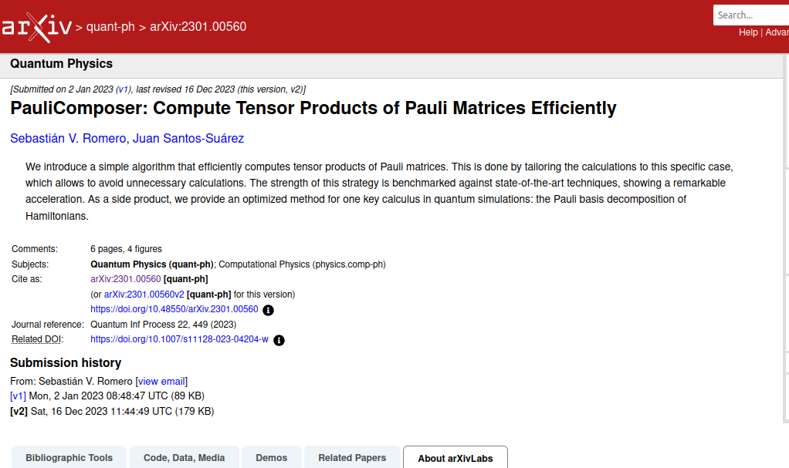

from
ognitive
Thanks
Pauli Matrices
\[ \quad\quad\; I = \begin{bmatrix} 1 & 0 \\ 0 & 1 \end{bmatrix} \quad \sigma_x = X = \begin{bmatrix} 0 & 1 \\ 1 & 0 \end{bmatrix} \] \[ \sigma_y = Y = \begin{bmatrix} 0 & -i \\ i & 0 \end{bmatrix} \quad \sigma_z = Z = \begin{bmatrix} 1 & 0 \\ 0 & -1 \end{bmatrix} \]Sparse Structure
\[ \text{Pauli String}\quad\mathcal{\hat{P}} = \bigotimes_i \sigma_i \] \[ \text{Pauli Operator}\quad\mathcal{\hat{O}} = \sum_{i} h_{i} \mathcal{\hat{P}}_i \]- For $N$ qubits, naive operator is $2^{N} \times 2^{N}$ matrix
- Pauli strings are sparse
- Only $2^{N}$ non-zero elements in the operator
What we use at Qognitive
\[ \big( \sum_i h_i \mathcal{\hat{P}}_i \big) \ket{\psi_t} \] \[ \bra{\psi_t} \big( \sum_i h_{i} \mathcal{\hat{P}}_i \big) \ket{\psi_t} \] where $\ket{\psi_t} \in \mathbb{C}^{2^N \times \text{a lot}}$How we do it?
TLDR: efficiently compute the non-zero elements for a Pauli string
https://arxiv.org/abs/2301.00560Our Implementation

Simple example
import fast_pauli as fp
P1 = fp.PauliString('XYZ')
P2 = fp.PauliString('YZX')
# Access dim and n_qubits
print(f"dim = {P1.dim}")
print(f"n_qubits = {P1.n_qubits}")
# Add two Pauli strings. Returns a PauliOp
P3 = P1 + P2
# Multiply two Pauli strings.
phase, new_string = P1 @ P2
Not so simple example
coeffs = np.array([0.5, 0.5], dtype=complex)
pauli_strings = ['XYZ', 'YYZ']
O = fp.PauliOp(coeffs, pauli_strings)
# Apply O to a batch of 1000 states
states = np.random.rand(8, 1000).astype(np.complex128)
states/= np.linalg.norm(states, axis=0)[None,:]
new_states = O.apply(states)
# Compute the expectation value of O w.r.t states
values = O.expectation_value(states)
Benchmark: $\mathcal{\hat{O}} \ket{\psi}$
fast-pauli
v = np.random.rand(2**N).astype(np.complex128)
op = fp.PauliOp(np.ones(len(pauli_strings)), pauli_strings)
op.apply(v)
Qiskit
v = Statevector(np.random.rand(2**N).astype(np.complex128))
op = SparsePauliOp(
pauli_strings, coeffs=np.ones(len(pauli_strings))
)
v.evolve(op)
Benchmark: $\bra{\psi_t} \mathcal{\hat{O}} \ket{\psi_t}$
fast-pauli
op = fp.PauliOp(coeffs, pauli_strings)
op.expectation_value(v_batch)
Qiskit
op = SparsePauliOp(pauli_strings, coeffs=coeffs)
state_batch = [Statevector(v) for v in v_batch]
results = [s.expectation_value(op) for s in state_batch] # noqa: F841
Qiskit Integration
# Convert a fast_pauli PauliOp to a Qiskit SparsePauliOp
O = fp.PauliOp([1], ['XYZ'])
qiskit_op = fp.to_qiskit(O)
fast_pauli_op = fp.from_qiskit(qiskit_op)
# Convert fast_pauli PauliString to a Qiskit Pauli object
P = fp.PauliString('XYZ')
qiskit_pauli = fp.to_qiskit(P)
Up next
- Always improving performance
- Expanding supported operations
- GPU support
- Whatever the community needs